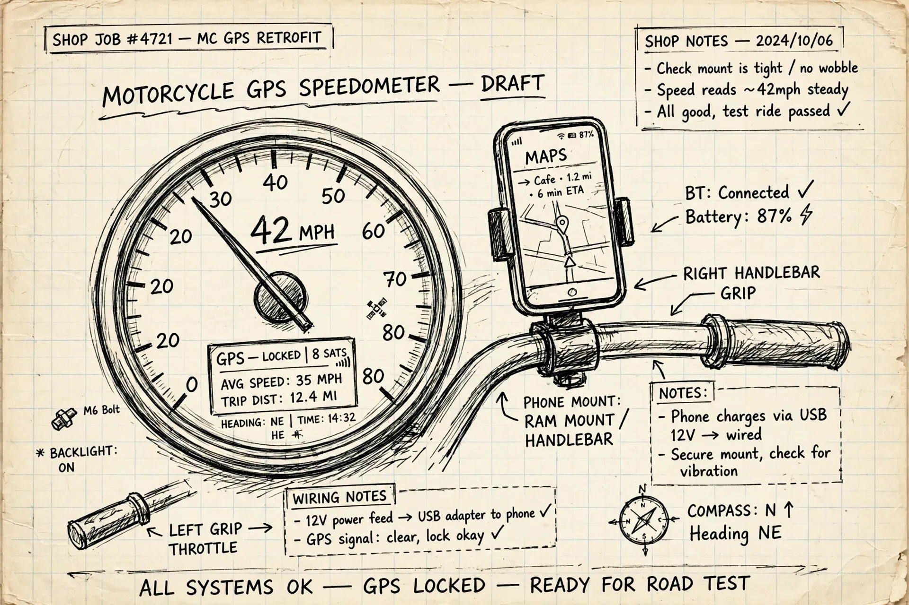

shop notes — one garage, five tools
Pocket Garage
Everything built in the garage, in one place. Pick a tool and get to work — no accounts, no ads, nothing to install unless you want it on your home screen.
 Wiring · Shop sheet Nº 1
Evo Wiring Planner
Build a harness you can trace at midnight.
Open the planner →
Publishing to GitHub — link goes live shortly.
Wiring · Shop sheet Nº 1
Evo Wiring Planner
Build a harness you can trace at midnight.
Open the planner →
Publishing to GitHub — link goes live shortly.
 Carbs · Shop sheet Nº 2
Carb Tune Journal
The jetting notebook — every pilot, main and needle change, written down.
Open the journal →
Carbs · Shop sheet Nº 2
Carb Tune Journal
The jetting notebook — every pilot, main and needle change, written down.
Open the journal →
 Service · Shop sheet Nº 3
Bike Maintenance Log
The service tracker — oil, brakes, tires, and what’s due next.
Open the log →
Service · Shop sheet Nº 3
Bike Maintenance Log
The service tracker — oil, brakes, tires, and what’s due next.
Open the log →
 Dyno · Shop sheet Nº 4
Pocket Garage Dyno
The dyno app — runs, curves, and what the motor actually made.
Open the dyno →
Dyno · Shop sheet Nº 4
Pocket Garage Dyno
The dyno app — runs, curves, and what the motor actually made.
Open the dyno →

Speedo · Shop sheet Nº 5 GPS Speedometer Your phone is the speedo — big GPS speed, trip stats, and a speed-only Simple view. Open the speedo →Put the garage on your home screen
One tap from here and the whole garage lives next to your other apps.
Step 1 of 3
·
Done — look for the Garage icon on your home screen.